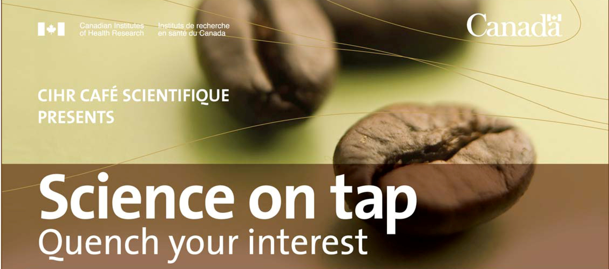

"Change your thoughts and you change our world" —Unknown
Events
Recent Events
Café Scientifique

Dr. Azar hosted and moderated a CIHR Café Scientifique in Sackville. She was joined by Dr.Looper, a psychiatrist, and Dr.Kouassi, a pharmacist, from Montreal. This event was attended by fifty participants, which is a big turnout for this small town's first Café Scientifique! It raised local awareness on the connections between stress, depression, inflammation, and health.
Mount Allison University'sresearch open house where the PSHL was chosen, along with two other labs, to give a media tour in order to celebrate the contributions of funding agencies to the university, as well as highlight the novel research at MTA's labs. (Fall 2011)